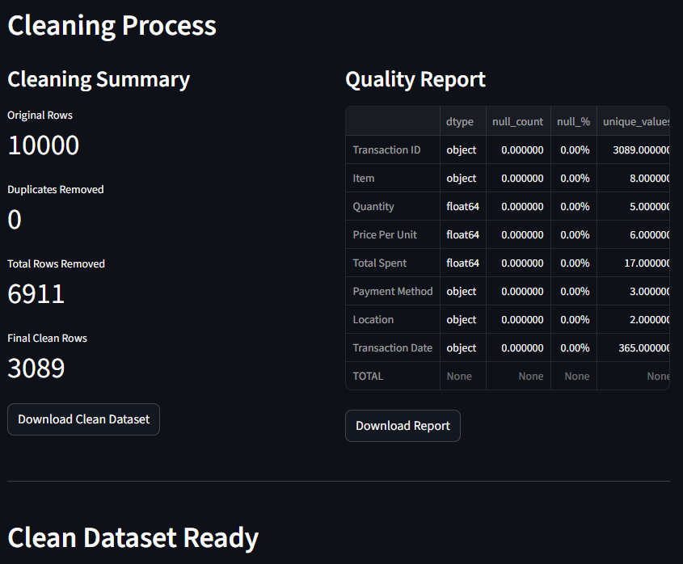

DATA QUALITY REPORTER AND CLEANER
[GRAPH 1] Screenshot of the app.
Intro
I built an automated data-quality reporter and cleaner using Python and Streamlit. The tool allows you to upload a CSV file and instantly receive:
★ A cleaned and standardized version of your dataset.
★ A complete data-quality report (missing values, duplicates, types, outliers).
★ Automatic formatting fixes and data-type corrections.
You can read more in the README.
Try the tool
You can test the cleaner/reporter directly in your browser. Upload any .csv file and the app will process it automatically.
Since it is a Streamlit app, you can also explore the source code on GitHub here
Last edited: —